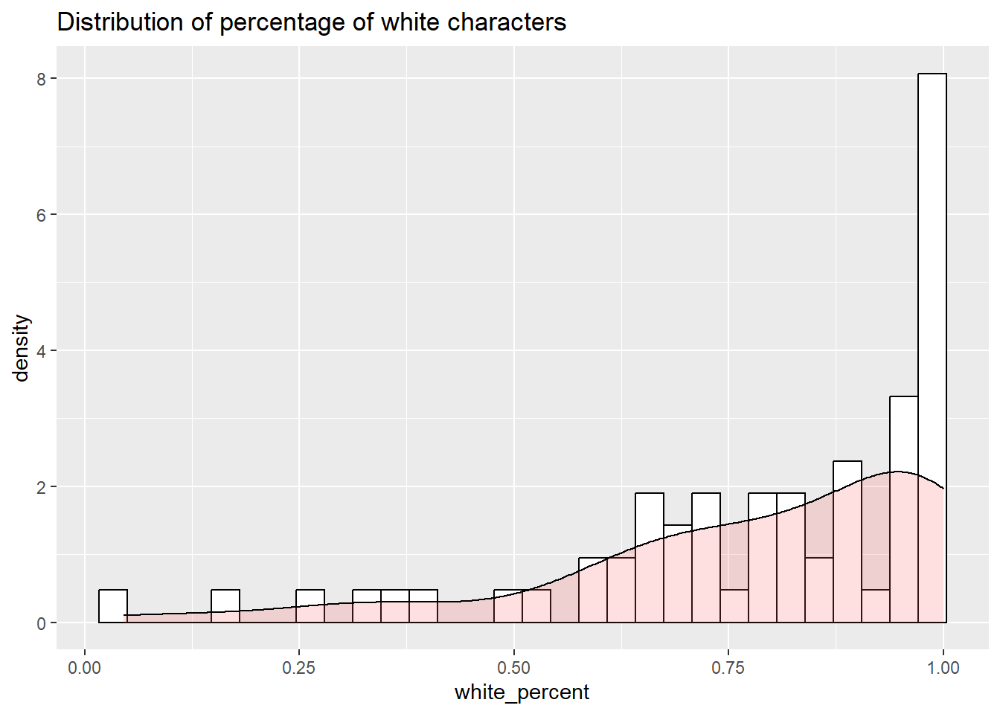

── Attaching core tidyverse packages ──────────────────────── tidyverse 2.0.0 ──
✔ dplyr 1.1.4 ✔ readr 2.1.4
✔ forcats 1.0.0 ✔ stringr 1.5.1
✔ ggplot2 3.4.4 ✔ tibble 3.2.1
✔ lubridate 1.9.3 ✔ tidyr 1.3.0
✔ purrr 1.0.2
── Conflicts ────────────────────────────────────────── tidyverse_conflicts() ──
✖ dplyr::filter() masks stats::filter()
✖ dplyr::lag() masks stats::lag()
ℹ Use the conflicted package (<http://conflicted.r-lib.org/>) to force all conflicts to become errors
library(tidytext)library(qdapRegex )
Attaching package: 'qdapRegex'
The following object is masked from 'package:dplyr':
explain
The following object is masked from 'package:ggplot2':
%+%
library(EnvStats)
Attaching package: 'EnvStats'
The following objects are masked from 'package:stats':
predict, predict.lm
library(ggpubr)library(univOutl)
Loading required package: robustbase
Loading required package: Hmisc
Attaching package: 'Hmisc'
The following object is masked from 'package:EnvStats':
stripChart
The following objects are masked from 'package:dplyr':
src, summarize
The following objects are masked from 'package:base':
format.pval, units
library(scales)
Attaching package: 'scales'
The following object is masked from 'package:purrr':
discard
The following object is masked from 'package:readr':
col_factor
Rows: 160176 Columns: 12
── Column specification ────────────────────────────────────────────────────────
Delimiter: ","
chr (4): title, code, type, sentence
dbl (8): date, string_length, ellipse, comma, semi_colon, dash, colon, paren...
ℹ Use `spec()` to retrieve the full column specification for this data.
ℹ Specify the column types or set `show_col_types = FALSE` to quiet this message.
#This calculates the percent long sentences for each work. A long sentence is any sentence that exceeds the corpus average (corpus_mean_string_length)sentence_length_by_work <- all_works_punctuation %>%group_by(title, code) %>%summarise(average_string_length =mean(string_length))
`summarise()` has grouped output by 'title'. You can override using the
`.groups` argument.
Rows: 4 Columns: 3
── Column specification ────────────────────────────────────────────────────────
Delimiter: ","
chr (1): type
dbl (2): work_type_length, percent
ℹ Use `spec()` to retrieve the full column specification for this data.
ℹ Specify the column types or set `show_col_types = FALSE` to quiet this message.
Introduction
Faulkner’s style has been as much a source of inspiration for some as well as a source irritation for others since the earliest reviews. There is, to be sure, no shortage of scholarly works that offer great insight into Faulkner’s writing and his use of punctuation. What has eluded critics is a view of his writing as a whole. New computational techniques make it possible to sketch a more detailed portrait of his use of punctuation throughout his career. This data can be coupled with the rich textual data available through Digital Yoknapatawpha. Combined this data can be used to understand not only when Faulkner makes particular choices about punctuation, but also what types of characters are present in those sentences. Doing this not only confirms suspicions about particular punctuation patterns in Faulkner by earlier scholars, but it also furthers the conversation about who gets represented in Faulkner and how. In the main, punctuation in Faulkner serves to stress his aesthetic of “the long sentence”. This aesthetic tries to capture a person’s past, present, and possible future in one moment in time, and acknowledges that the neat temporal divisions past, present, and future represent are always provisional and permeable. Though ostensibly representative of the human condition of all people, the aggregated data tell a different story from Faulkner’s own understanding of his writing. Sentence length appears to be deeply tied to the two threats undermining the upper class White plantocracy in his fiction: the rise of poor whites and what can crudely be referred to as miscegenation. In light of the current critical reception of Faulkner, this is not altogether surprising. To be sure, miscegenation and the rise of poor whites are part of well-worn critical ground. What is less apparent, and indeed impossible to substantiate without computational methods, is how these themes consistently manifest themselves at the level of the sentence and his use of punctuation.
Critical literature on Faulkner
Faulkner’s style has long been a central concern of critics and scholars of Faulkner’s writing. It has not always been universally well received, one critic writing of Absalom, Absalom! remarks that, “When a narrative sentence has to have as many as three parentheses identifying the reference of pronouns, it signifies mere bad writing and can be justified by no psychological or esthetic principle whatever.” (DeVoto 147). While critics now uniformly agree that Faulkner’s style is more than merely “bad writing,” there is no settled view on the psychological or aesthetic principle. List a couple of examples
Faulkner’s own opinion goes here.
Methodology and Editing Faulkner
Computational analysis of Faulkner’s writing is rife with challenges and caveats. Certainly one issue that is insurmountable is settling on an edition of the works. Noel Polk famously edited “corrected” versions of Faulkner’s texts, but even he admits that this is far from the “definitive” text (POLK 6). In part this is because Faulkner was far from definitive in his own approach to punctation. He retyped parts of the Benjy section to The Sound and the Fury three times, and used a different punctuation system in each iteration (Polk 14). It is evidence of Faulkner’s constant experimentation with punctuation with each text that he wrote and throughout his career. While it is theoretically possible to build a dynamic model of these punctuation changes, the very real practical challenge would be to digitize the typescript and manuscript pages to make them machine readable. Since no such corpus is available for the foreseable future it makes sense to settle for the highly regarded versions created by Polk. Adhering, where possible to these editions, also allows for better alignment with the DY database, which used the Polk editions for their data entry. If these editions are imperfect, there is at least some assurance that it is the mostly likely version a modern reader will read.
Beyond the variance in editions, there is with Faulkner also the issue of the internal coherence of the textual corpus. Faulkner’s writing is quite heterogeneous, and consists of novels, short stories, poetry, film scripts, and a text that hovers between a stage play and a novel: Requiem for a Nun. Even within these broad categories there are further subdivisions. Speaking of the novels and short-stories more narrowly, there are the 14 novels and 54 short-stories that take place in his famous Yoknapatawpha County. Among these are “uncollected” short stories that were only ever published in magazines and then incorporated wholesale or in part into novels such as The Unvanquished, The Hamlet, and Go Down, Moses. There is also a further set of unpublished stories that are interesting in their own right or that have resonances with Faulkner’s more well-known published texts. This leads to an interesting intellectual problem. Some but not all of the stories in The Unvanquished are only modified slightly from their magazine versions. Conversely, The Saturday Evening Post version of “The Bear” varies quite substantially from the version that appears in Go Down, Moses, even though the two are printed only two days apart (Corrigan Padgett). This leads to a rich body of work that makes for a poor experimental design. Using computational techniques to analyze differences between texts works best when all the texts are unique in their content and homogeneous in their type. When a corpus is heterogeneous with many different types of texts and also has duplication between texts, it is harder to detect consistent patterns. This heterogeneity serves as a warning for any broad generalizations about Faulkner as a writer as a whole. In the main, because these generalizations require stepping back so far away that it is no longer possible to see the trees from the forest. For example, Faulkner writes longer sentences than other authors (17 words-per-sentence), but this number varies quite widely from canonical works like As I Lay Dying that use an unremarkable 12 words per sentence to works that are exceptionally verbose like Absalom, Absalom, which uses 43 words per sentence. Therefore, it makes more sense to stay away from large assumptions about how Faulkner punctuated his texts, and instead accept that what is true in some of Faulkner’s writing is not necessarily true in all of his writing. These local insights can then be stitched together to create a more global collage.
Sentence length
The issue of corpus heterogeneity is one that complicates even one of the most basic metrics: sentence length. It does not require computational analysis to understand that Faulkner writes in long sentences. For anyone who has ever taught Faulkner, it is perhaps the most common stumbling block and, indeed, complaint among students. Faulkner himself was asked about it no fewer than four times, when he lectured at at the University of Virginia (CITE). However, quantifying what readers might mean when they say Faulkner’s sentences are long is a more complex. The first issue is defining what constitutes a sentence. In terms of computation, the simplest way to define it is as any set of words where the first word is capitalized and is closed with end-sentence punctuation like a period, exclamation mark, or question mark. These basic parameters are frequently used to determine sentence length in standard prose writing. This technique works well in most cases, but runs into quite a number of exceptions in Faulkner. For starters, Faulkner has a tendency to nest narratives within quoted material. For example, in The Hamlet (1940), much of the story is told by Ratliff, an itinerant sewing machine salesman. When he takes over as narrator, the perspective moves from third person omniscient to first person, and within this embedded narrative Ratliff quotes various characters. These quotations are themselves sentences, but also part of a longer, enframing sentence. For instance, while describing a scene between two antagonists, Ratliff says, “What will he say? What can he say except ‘All right. What do you aim to do?’” If a sentence is defined as any set of words that starts with a capital letter and ends with end-sentence punctuation then this is four separate sentences. This seems unsatisfactory. The two sentences “All right.” and “What do you aim to do?” are embedded within the larger quote started with “What can he say except”. Not accounting for sentence embedding in The Hamlet actually makes the average sentence length in Faulkner appear shorter than it is. The exact opposite problem is true in The Sound and the Fury. Here Faulkner embeds sentences and phrases through italics. This occurs frequently in the the Quentin section where the character’s internal narration is interrupted by memories. At one point, Quentin recalls Gerald Bland’s mother talking about her son’s looks, which is interjected by a memory of him fantasizing about shooting his sister’s fiance, Herbert Head: “Telling us about Gerald’s women in a Quentin has shot Herbert he shot his voice through the floor of Caddy’s room tone of smug approbation” (105). The main sentence is: “Telling us about Gerald’s women in a tone of smug approbation.” This is interrupted by two clauses “Quentin has shot Herbert,” and possibly another sentence or a part of one “he shot his voice through the floor of Caddy’s room.” There is no unambiguous way to determine if the two phrases should be seen as part of the same italicized sentence or if they should be read separately. There are valid interpretations for both. Similarly, while it would be computationally possible to excise the italicized text, this distorts the fact that these italics quite deliberately interrupt and extend the sentence because there is no end-sentence punctuation. Consequently, the sentence in The Hamlet (17 words) and the sentence in The Sound and the Fury (25 words) are roughly the same length, but in the tabulation the former is significantly shorter than the latter (5). This inconsistency is a feature of the entire corpus, because Faulkner varied the way in which creates long sentences across throughout career. Sentence length is therefore a rather crude and imperfect measure to understand punctuation in Faulkner, but it makes an interesting starting point for investigation.
Going by the imperfect measure of sentence length, Faulkner’s writing is not exceptional compared to other writing at the time. At 16.74 words per sentence, Faulkner’s sentences are only slightly longer than the average 16 words per sentence for a text in the Corpus of English Novels, which covers writing from 1881 - 1922 (Ihrmark 79) and longer still than the 13 words per sentence around the 1930s (Rudnicka). Nor is the slightly higher than average sentence length a feature of all his works. The Sound and the Fury is notoriously complex. Nevertheless, at only 10.202611 words per sentence, it uses fewer words on average than Hemingway’s The Old Man and the Sea, which uses 13 words per sentence (Ihrmark 82). Despite this counter intuitive disparity in average sentence length, Faulkner’s more verbose style could never be confused with Hemingway’s trademark concision. In part, this has to do with the distribution of sentence lengths within each text. The The Sound and the Fury may have a lower words-per-sentence average than The Old Man and the Sea, but it also contains one sentence that counts over 4,000 words. Clearly, this is less succinct than Hemingway, and probably most other authors as well. These long sentences, it should be noted, are more of a statistical exception than the rule. The normal distribution for this text, and most of Faulkner’s other texts is heavily right-skewed. Meaning that for the most part they tend of have “average”-length sentences interspersed with much longer sentences. In the case of the Sound and the Fury 0% of the sentences are longer than the mean corpus sentence length. The same can be said for Faulkner’s other texts, most of these (1%) have an average sentence length lower than the total average across the corpus. More succinctly, just as a small share of sentences in each work gives the impression of long sentences, and, similarly, within the corpus of Faulkner’s writing there are a minority of works that are above average in sentence length. Statistically, lengthy sentences are a local feature not a global phenomenon.
Nevertheless, lengthy sentences are seen as hallmark feature of Faulkner’s writing. In part this may be because some of Faulkner’s most canonical works feature long sentences, Go Down, Moses (2 026%), Absalom, Absalom, “A Rose for Emily”, and “Barn Burning”. These works are, in a sense, more Faulknerian than a relatively unknown early text like “Elly”. Nevertheless, equally canonical works like The Sound and the Fury, Light in August, and As I Lay Dying do not, on average, stand out as being particularly verbose relative to the the general mass of texts written in English at this particular time. Despite these counter indications, it goes against a firmly established scholarly tradition based on Faulkner’s own statements and, indeed, common sense, to argue that lengthy sentences aren’t Faulkner’s particular metier. Instead, to understand why Faulkner’s sentences, for lack of a better word, feel long it is informative to look at their internal structure.
Extending the Sentences: Pauses and Such
The preceding discussion about sentence length raises an obvious question: What is a long sentence? Is it any sentence above the average in a corpus? If so, how much longer does it need to be to be consider long and not simply longer than usual? If a sentence is indeed long, is there a maximum length? At what point, does a string of words grammatically cease to be sentence? James Joyce famously wrote “the longest sentence” in English in the Penelope chapter of Ulysses, but this sentence is not long in the same way a sentence in Faulkner is long. While there is certainly semantic coherence underlying Joyce’s string of words, the lack of mid-sentence punctuation makes it grammatically incorrect if not necessarily syntactically incoherent. This was rather point, of course, but it is an important distinction to make. Faulkner not only creates long strings of words, but also coordinates and subordinates his clauses through punctuation. Thus, whereas Joyce saw the intervention of punctuation as an infelicity to the ineluctable flow of language in the Penelope episode, the sheer profusion of punctuation in Faulkner speaks to the endless way in which meaning branches, eddies, rejoins and ends in an arbitrary terminus only to recirculate again. To use two spatial metaphors, The Penelope chapter is a stream, Faulkner’s writing is a watershed.
To understand how Faulkner lengthens his sentences it is useful to look at mid-sentence punctuation like: colons, ellipses, and parenthesis. Faulkner is not merely making sentences very long, but using punctuation to stretch out the definition of a sentence, and, in turn, call attention to the punctuation itself. The finality of the period is replaced with the indeterminacy of the unfinished sentence. What is telling about Faulkner’s writing is that he does not simply write long sentences throughout his career, but experiments with different punctuation configurations to make this possible. Arguably, any number of texts serve as good examples, but there are three salient texts that deviate from Faulkner’s own writing statistically: Absalom, Absalom!, Intruder in the Dust, and “Dry September.”
To determine which of Faulkner’s texts have punctuation at variance with the corpus more generally,a statistical model of Faulkner’s short stories and novels was created. The play, A Requiem for a Nun was excluded from this analysis, because the punctuation patterns, such as placing a colon to break between character name and their dialogue, distorted the average. With this slightly reduced corpus, the texts were broken down into sentences and each mid-sentence punctuation mark was counted. Intuitively, sentence length and mid-sentence punctuation are positively correlated. As sentences get longer, there is a higher likelihood of finding mid-sentence punctuation. There are some functional limits to this correlation, however. Modern punctuation tends to function as a syntactical system that regulates the number of certain punctuation marks that can be used (@Shou 198). This is particularly true of colons, semi-colons, and parenthesis. For example, one line in The Mansion (1959) has 9 semi-colons and is over 400 words long. It pushes the limits as to how many independent clauses a reader can reasonably be expected to understand in the same ostensibly coherent thought delimited by a period.
By taking the averages of the number of mid-sentence punctuation marks per sentence across all texts, it is possible to detect texts that deviate from the overall pattern. In general, phonological and syntactical phenomena tend to follow a power-law distribution (@sun and Wang 32, Newman 372); where the probability decreases exponentially with each frequency interval. Syntactically, this makes sense. In any given text, most sentences do not contain commas. If a sentence does contain a comma, it is far less likely that it would also contain a second comma, it is exponentially less likely to contain a third comma. While this rule breaks down when it comes to punctuation marks like colons, which are governed by grammatical rules that prevent more than one colon per sentence, it is safe to assume that if Faulkner did not change his punctuation patterns the relative frequency would be within the same range across the corpus. Plotting the distributions across all punctuation marks reveals an exponential distribution best described as chi-squared with three degrees of freedom (\[\chi^2_3\]); visually this is curve that looks a bit like a slide on a playground: a steep ladder on the left-hand side with a long-curve that never quite reaches the ground on the right. This curve indicates that many texts are within the same range, but a few texts have a very high relative frequency of specific punctuation marks.
Determining when on that tail a value is outside of the expected range is a matter of some interpretation. Indeed, deciding that a data point is an outlier is an ongoing debate among mathematicians (Hawkins 9-12). As the distance between the mean and the highest value was quite far apart, the skewness of the distribution was corrected for by either taking the inverse or the log of each of the values depending on the line of best fit in a quantile-quantile plot. Using these normalized distributions, Rosner’s multiple outlier test was run on any value outside \[Q3 + 1.5IQR\]. Additionally, a secondary test was run using the Adjusted box plot method developed by Hubert and Vandervieren (@Hubert). The tests revealed slightly different outliers, but on the whole there is an inconsistent use of mid-sentence punctuation across the corpus. Faulkner uses some mid-sentence punctuation substantially more than in some texts versus others. This indicates some measure of experimentation with how he is creating long sentences. If he were developing only one particular technique, for example concatenating a string of independent clauses separated by a semi-colon as in The Mansion, the data for the other punctuation marks would likely not be as skewed. This is not the case, and indicates variance in punctuation techniques across his career. This variance does not appear to be strongly time dependent. There were no distinct phases to his punctuation experiments, but instead individual works stand out as being particularly experimental.
Three texts provide useful insights. Absalom, Absalom, and Intruder in the Dust, and “Dry September” were all marked as outliers. As one of Faulkner’s most challenging texts, it is unsurprising that the punctuation patterns in Absalom, Absalom! diverge from the corpus. Averaging around 50 words per sentence, the text is marked by a heavy use of parentheses. Thus, a sentence will be interrupted by parenthetical statements, which in themselves are not usually sentences, leading to sentences of extraordinary length. In one sentence stretching over 1,000 words, he uses 9 parenthetical statements as a running commentary on the main sentence (AA 124-127). Some of these parentheticals are themselves several lines. All of this is complicated by the fact that this particular sentence occurs in Chapter 6, which is itself entirely surrounded by parentheses. As a result, the parentheses in this sentence are actually nested within surrounding parentheses. This nesting continues throughout the Chapter 6 and at some point the the word Quentin is nested 4 levels deep. That is, as an aside to an aside to an aside. Not only, then, are Faulkner’s sentences very long in Absalom, Absalom! they are also, in a sense, deep. Each parenthetical statement adds more commentary and context, which itself requires more commentary and context. It is fitting that peeling away all of these parentheses like layers of an onion reveals the absent center: Quentin. The tale is ultimately about the teller.
In a slightly different fashion, Faulkner instrumentalizes colons in Intruder in the Dust to create sentence depth. To give an extreme example, one sentence in Intruder in the Dust is over 1,600 words long and features 18 colons. The sentence deploys colons as a clausal adjunct. Nunberg labels this phenomenon colon-expansion, whereby the content following the colon expands or elaborates on the preceding clause (Nunberg 30). Importantly, he points out that there are only two constraints to a colon-expansion. First, there is a semantic limit to the extent to which something can be elaborated, and, two, colon-expansions cannot themselves contain other colon-expansions (Nunberg 30-31). Faulkner violates the former by dint of the latter. Each sentence dilates in meaning as he adds on more clausal adjuncts and elaborations. While it is impractical to quote Faulkner’s multipage sentence in its entirety, the opening sequence captures this effect: “Because he was free: in bed: in the cool familiar room…(34)”. With each colon more details about the narrative situation are revealed. The choice for concatenating clauses with a colon and not simply writing new sentences, appears to be similar to the depth effect created through parentheticals in Absalom, Absalom!. With each new colon the reader is tasked with processing a new piece of information that falls within the scope of one sentence. The narrative does not move forward but instead moves deeper.
It does not require inferential statistics to understand that the punctuation in Absalom, Absalom! and Intruder in the Dust are unusual, even for Faulkner. One surprising text that is a statistical outlier is “Dry September.” This is a highly canonical Faulkner story and frequently features in literature anthologies because it is very teachable (list anthologies). “Dry September” is part of cluster of stories from 1927-1934 that average a higher number of ellipses per sentence than other Faulkner texts. To mark this as a general feature of Faulkner’s style during this period would be a mistake, however; as canonical works like The Sound and the Fury, As I Lay Dying, and Light in August, all written around this time, do not feature nearly as many ellipses. Instead, this may have been a punctuation mark he was experimenting with in some specific contexts.
In “Dry September” the ellipses serve a powerful function. The story is about the lynching of a Black man, Will Mayes, based on rumors that a White woman, Minnie Cooper, had been violated by him. The story never shows the actual lynching nor is it ever clear that Cooper had accused Mayes or anyone of anything. The majority of these ellipses (87%) occur in the opening scene of the story when the men of the town share incomplete knowledge of events. It is unclear what may have happened, if anything, and Faulkner marks these statements with ellipses. The silence created by the ellipse amplifies the possible horror: “Damn, if I’m going to let a white woman…”; “By god if they…”; “I don’t live here, but by God, if our mothers and wives and sisters…”. Likewise, previews of the impending lynching are also obscured by ellipses. “All that’re with me get up from there. The ones that ain’t…”, the ringleader, McLendon implores the men in the barber shop. The ellipse here hints at the fate of the men who do not participate in the lynching. These ellipses function as another way in which Faulkner extends his sentences. In this case, uncharacteristically for Faulkner, without using more words.
The different techniques Faulkner uses to achieve his long sentences show a sustained commitment to an artistic vision he expressed throughout his career. Far from limiting experimentation to a particular phase or type of writing, his punctuation speaks to a constant desire to capture the long sentence. To give every character their due as experiencing their past present and future simultaneously. While Faulkner was certainly aspiring to capture a universal human condition, when these long sentences appear is not as universal as it might first seem. As a reader, it would be impossible to keep track of which characters appear in which long sentences. It is possible to capture this computationally, doing so reveals a stark fact: the long sentence appears to be reserved for some people in Yoknapatawpha county. Nor is it that every past is part of the “sum of the past” only those pasts about race are interesting.
Import Demographics
#demographic data goes here. Read in file then come up with a measure of class. % upper class men present.demographic <-read_csv("processed_data/dy_database_flattened_2023_6_29.csv")
Rows: 35498 Columns: 41
── Column specification ────────────────────────────────────────────────────────
Delimiter: ","
chr (32): SourceTextTitle, SourceTextCode, Location, LocationCode, Narrative...
dbl (9): PageNumber, PageEventEnds, Nid, OrderWithinPage, Chronological Ord...
ℹ Use `spec()` to retrieve the full column specification for this data.
ℹ Specify the column types or set `show_col_types = FALSE` to quiet this message.
# create a demographic chart of all relevant variables.short_demographic <- demographic %>%select( SourceTextTitle, SourceTextCode, PageNumber, Nid, PresentMentioned, Race, Gender, Class, Rank, IndividualGroup ) %>%filter(PresentMentioned =="Present") %>%filter(IndividualGroup=="Individual") %>%filter(str_detect(Gender,"Group",negate=TRUE))
#create tibble of each race in each event.race_demographic <- short_demographic %>%group_by(SourceTextCode, Nid) %>%pivot_wider(id_cols =c(SourceTextCode, PageNumber, Nid),names_from = Race,values_from = Gender,values_fn =list(Gender = length),names_prefix ="race_" )
#Percent white people per workrace_demographic_summary <- race_demographic %>%group_by(SourceTextCode) %>%summarise(across(starts_with("race_"), ~sum(.x, na.rm =TRUE))) %>%group_by(SourceTextCode) %>%mutate(total =sum(c_across(starts_with("race_")), na.rm =TRUE)) %>%mutate(white_percent = race_White / total)
#Character count by class in each eventclass_demographic <- short_demographic %>%group_by(SourceTextCode, Nid) %>%pivot_wider(id_cols =c(SourceTextCode, PageNumber, Nid),names_from = Class,values_from = Gender,values_fn =list(Gender = length),names_prefix ="class_" ) %>%rename_with( ~tolower(gsub(" ", "_", .x, fixed =TRUE)))
#Percent upper class characters in a textclass_demographic_summary <- class_demographic %>%group_by(sourcetextcode) %>%summarise(across(starts_with("class_"), ~sum(.x, na.rm =TRUE))) %>%group_by(sourcetextcode) %>%mutate(total =sum(c_across(starts_with("class_")), na.rm =TRUE)) %>%mutate(upper_percent = class_upper_class/total)
#Each character in an event by gendergender_demographic <- short_demographic %>%group_by(SourceTextCode, Nid) %>%pivot_wider(id_cols =c(SourceTextCode, PageNumber, Nid),names_from = Gender,values_from = Class,values_fn =list(Class = length),names_prefix ="gender_" ) %>%rename_with( ~tolower(gsub(" ", "_", .x, fixed =TRUE)))
#Breakdown of each text by race class and genderraceclassgender_demographic_summary <- raceclassgender_demographic %>%group_by(sourcetextcode) %>%summarise(across(starts_with("all_"), ~sum(.x, na.rm =TRUE))) %>%group_by(sourcetextcode) %>%mutate(total =sum(c_across(starts_with("all_")), na.rm =TRUE)) %>%mutate(across(where(is.numeric), ~ . / total), .names ="{.col}_percent")
#Breakdown of each text by race class and genderracegender_demographic_summary <- racegender_demographic %>%group_by(sourcetextcode) %>%summarise(across(starts_with("all_"), ~sum(.x, na.rm =TRUE))) %>%group_by(sourcetextcode) %>%mutate(total =sum(c_across(starts_with("all_")), na.rm =TRUE)) %>%mutate(across(where(is.numeric), ~ . / total, .names ="{.col}_percent")) %>%select(contains("_percent"))
demographics_punctuation %>%ggplot(aes(x = white_percent)) +geom_histogram(aes(y = ..density..),colour ="black",fill ="white") +geom_density(alpha = .2, fill ="#FF6666") +ggtitle("Distribution of percentage of white characters")
Warning: The dot-dot notation (`..density..`) was deprecated in ggplot2 3.4.0.
ℹ Please use `after_stat(density)` instead.
`stat_bin()` using `bins = 30`. Pick better value with `binwidth`.

demographics_punctuation %>%ggplot(aes(x = male_percent)) +geom_histogram(aes(y = ..density..),colour ="black",fill ="white") +geom_density(alpha = .2, fill ="#FF6666") +ggtitle("Distribution of Percent Male Characters")
`stat_bin()` using `bins = 30`. Pick better value with `binwidth`.
Warning: There were 3 warnings in `summarise()`.
The first warning was:
ℹ In argument: `title = (function (x, ...) ...`.
Caused by warning in `mean.default()`:
! argument is not numeric or logical: returning NA
ℹ Run `dplyr::last_dplyr_warnings()` to see the 2 remaining warnings.
Warning: There were 2 warnings in `summarise()`.
The first warning was:
ℹ In argument: `sourcetextcode = (function (x, ...) ...`.
Caused by warning in `mean.default()`:
! argument is not numeric or logical: returning NA
ℹ Run `dplyr::last_dplyr_warnings()` to see the 1 remaining warning.
#Each punctuation mark joined by race, class, and gender.demographics_punctuation_raceclassgender <- summary_punctuation %>%inner_join(raceclassgender_demographic_summary,join_by(code == sourcetextcode))
#Create a matrix with all the relevant correlation values that will be tested against string_lengthcorrelation_matrix_all <- demographics_punctuation_raceclassgender %>%ungroup() %>%select_if(is.numeric) %>%select(starts_with("all_"))# Test correlation of string_length with all other variables. The map function iterates over all names in the matrix and runs a pearson correlation test against string_length. The resulting object is unnested and converted to a table. Only values with a p-value less than .05 were kept.correlation_results_all <-map(names(correlation_matrix_all), ~ { test_result <-cor.test( demographics_punctuation_raceclassgender$string_length, correlation_matrix_all[[.x]],method ="pearson" )tibble(column = .x,cor_coefficient =round(test_result$estimate, 3),p_value =round(test_result$p.value, 3) )}) %>%bind_rows() %>%unnest_wider(cor_coefficient) %>%filter(p_value < .05) %>%filter(cor > .2| cor <-.2)
Warning in cor(x, y): the standard deviation is zero
#additional testing was run on novels and short_stories. Neither produced any interesting results. As the data is reduced, the statistical significance goes down.correlation_matrix_novel <- demographics_punctuation_raceclassgender %>%ungroup() %>%filter(type=="novel") %>%select_if(is.numeric) # Test correlation of string_length with all other variablescorrelation_results_novel <-map(names(correlation_matrix_novel), ~{ test_result <-cor.test(correlation_matrix_novel$string_length, correlation_matrix_novel[[.x]])tibble(column = .x,cor_coefficient =round(test_result$estimate, 3),p_value =round(test_result$p.value, 3) )}) %>%bind_rows() %>%unnest_wider(cor_coefficient) %>%filter(p_value<.1) %>%filter(cor > .2| cor <-.2) %>%filter(str_detect(column, "all_"))
Warning in cor(x, y): the standard deviation is zero
Warning in cor(x, y): the standard deviation is zero
Warning in cor(x, y): the standard deviation is zero
Warning in cor(x, y): the standard deviation is zero
Warning in cor(x, y): the standard deviation is zero
Warning in cor(x, y): the standard deviation is zero
Warning in cor(x, y): the standard deviation is zero
Warning in cor(x, y): the standard deviation is zero
Warning in cor(x, y): the standard deviation is zero
Warning in cor(x, y): the standard deviation is zero
correlation_matrix_short_story <- demographics_punctuation_raceclassgender %>%ungroup() %>%filter(type=="short_story") %>%select_if(is.numeric) # Test correlation of string_length with all other variablescorrelation_results_short_story <-map(names(correlation_matrix_short_story)[-1], ~{ test_result <-cor.test(correlation_matrix_short_story$string_length, correlation_matrix_short_story[[.x]])tibble(column = .x,cor_coefficient = test_result$estimate, p_value =round(test_result$p.value, 3) )}) %>%bind_rows() %>%unnest_wider(cor_coefficient) %>%filter(p_value<.1) %>%filter(cor > .2| cor <-.2) %>%filter(str_detect(column, "all_"))
Warning in cor(x, y): the standard deviation is zero
Warning in cor(x, y): the standard deviation is zero
Warning in cor(x, y): the standard deviation is zero
Warning in cor(x, y): the standard deviation is zero
Warning in cor(x, y): the standard deviation is zero
Warning in cor(x, y): the standard deviation is zero
Warning in cor(x, y): the standard deviation is zero
Warning in cor(x, y): the standard deviation is zero
Warning in cor(x, y): the standard deviation is zero
Warning in cor(x, y): the standard deviation is zero
Warning in cor(x, y): the standard deviation is zero
Warning in cor(x, y): the standard deviation is zero
Warning in cor(x, y): the standard deviation is zero
#Create a matrix with all the relevant correlation values that will be tested against string_lengthcorrelation_matrix_racegender_all <- demographics_punctuation_racegender %>%ungroup() %>%select_if(is.numeric) %>%select(starts_with("all_"))# Test correlation of string_length with all other variables. The map function iterates over all names in the matrix and runs a pearson correlation test against string_length. The resulting object is unnested and converted to a table. Only values with a p-value less than .05 were kept.correlation_results_racegender_all <-map(names(correlation_matrix_racegender_all), ~ { test_result <-cor.test( demographics_punctuation_racegender$string_length, correlation_matrix_racegender_all[[.x]],method ="pearson" )tibble(column = .x,cor_coefficient =round(test_result$estimate, 3),p_value =round(test_result$p.value, 3) )}) %>%bind_rows() %>%unnest_wider(cor_coefficient) %>%filter(p_value < .05) %>%filter(cor > .2| cor <-.2)
Characters and the long Sentence
When Faulkner is asked about his use of long sentences at the Virginia Colleges Conference in 1957, he claims that there is no such thing as “was” because the past is pat of “every man, every woman, at every moment”. This aesthetic that attempts to get “his [a character in a story] past and possibly his future into the instant in which he does something” ( Faulkner at Virginia). On the surface, this has a universalist appeal: men, women, and everyone is the “sum” of their past. Yet, if this were truly universal long-sentences would be equally distributed among different types of characters in the corpus.
Understand how the long sentence may or may not apply to certain characters requires knowing what type of characters are in what specific texts. Fortunately, the Digital Yoknapatawpha project has at least some of this data available. Created with the mission to encode every character, location, and event in Faulkner’s Yoknapatawpha fiction, DY represents a rich database of every character in every event in every text that takes place in Yoknapatawpha. The database has been built by over a decade of peer-reviewed data entry by a team of over 30 Faulkner experts, with each of the thousands of records adhering to strict editorial principles. All data entry for the database was manually performed, which leaves room for human error and a variance in interpretations, but the continuous cycles of peer-review have kept variances to a minimum. The database focuses exclusively on the 14 novels and 54 short stories that takes place in Yoknapatawpha, and excludes roughly 30%% of the Faulkner’s writing in novels and short stories. This caveat aside, the database still represents the majority of Faulkner’s writing. In DY each event is any time a character or group of characters is present or mentioned at a specific location for a limited duration of time. Each character, in turn, is identified by different characteristics, race, class, gender, rank and other important attributes. By calculating what types of characters occur in each event, it is possible to build a demographic frequency model on how often characters occur in the corpus.
Based on the demographic frequency model, the world of Yoknapatawpha is heavily skewed towards Whites (1%) and men 1. The distributions are also heavily left-skewed, meaning that the overwhelming majority of stories feature Whites and men, and in only very few stories do they not represent the majority of characters. Given that Faulkner was himself a White male, this is not entirely surprising. These measures give a rough indication as to the composition of demographics within the corpus. Race, class, and gender can also be linked to one another to get a better sense of the finer distinctions between characters. For example, upper class White males constitute around 24% of the characters who appear, whereas for enslaved black women this number is a paltry . Clearly, there is a stark disparity in terms of who gets represented.
These demographic distributions per work can be matched to the punctuation distributions. By combining these data models, it is possible to see if there is a correlation between sentence length and the types of characters that occur. To do this, a Pearson correlation was run between a race, class, gender composite of all the characters. There was a weak positive correlation between sentence length and four types of characters: MixedBlackWhite Enslaved Female, MixedBlackWhite Upper Class Male, MixedBlackWhite indeterminable Male, and MixedBlackWhite Upper Class Female. To a certain extent, sentence length goes up when there are proportionally more characters who do not fall neatly into the South’s strict racial categories.
Looking at the racial composition of one text is still a crude measure, since it does not locate those characters within a sentence. It could be that there are long sentences in a text, but that the character involved in the action is not one of the kind described above.
Correlation
Correlation data is a bit confounding. This has largely to do with how you select the sample. For example, we can do a very imprecise correlation and track how often specific types of characters appear in a novel and then see if that has anything to do with the average sentence length. It certainly does and those novels in which mixed race characters appear Absalom, Absalom and Intruder in the Dust tend to have higher than usual words per sentence. This is interestingly not the case for one of Faulkner’s most famous mixed race characters: Joe Christmas in Light in August. This is a very crude tool, though. Just because certain types of characters appear in novels that tend to have longer sentences, does not mean that they necessarily appear in those sentences. It could be that they appear often, but they only appear in short, relatively unreflective sentences. To understand what characters appear in what sentences, we can use the Digital Yoknapatawpha database. This database can be used to understand what characters appear in what events. Each event, in turn, has been recorded by page number, order within page, and the first words in the text of the event. The last bit of data can be used to reconstruct the textual boundaries of an event. That is, not every event is one sentence, some are multiple pages, and, conversely some events are only a few words. From this data we can gather which sentences fall within a particular event and, in the case of a long sentence, what events fall within a sentence. This can then be used to establish which characters and types of characters appear in which sentences. Since there are roughly 90 thousand sentences ranging from sentences 1 word long to 6,000 words long there is a really broad range in which characters appear. We would want to know the relationship between the type of character who appears and the sentence length. To establish this we can look at the Pearson correlation between each character type and string length. Since this is a very large sample size, the p-value, the odds that the correlation is random, tends to be quite low. In simpler terms, a low p value states that the correlation is significant. The magnitude of the correlation is a number between -1 and 1. Since there is no such thing as negative sentence length, there is no possibility of an inverse correlation. All values have a positive correlation with sentence length. The magnitudes tend to vary. Generally, with a pearson correlation any value above .5 shows a moderate degree of correlation, while that above .7 shows a strong correlation. Based on this data, the results are somewhat unsurprising: upper class white males tend to be a predictor of sentence length. When they appear sentence length tends to go up. This is true whether they are present in the event or merely mentioned. Given upper class white males tend to be the protagonists of these novels. This is not all that shocking. It makes sense that the longest sentences appear when the main character is part of the action. What is quite telling are the correlations just below upper class white males. Here we see higher correlations for upper class white females and lower class white males who are mentioned. That is, when these characters are spoken about the sentences have a tendency to get longer as opposed to when these characters are present. This effect is quite revealing of the texts. Women and lower class males are meant to be spoken about by upppler class men. They are the relational objects that constitute the protagonist subject. Since we have the correlations for each event we also have the events specific characters appear in. Thus, we can run a correlation on which characters tend to appear in longer sentences. Here again, the top ranking is unsurprising: Quentin Compson. When Quentin appears the sentences get longer. The same is true to a lesser extent when Caddy Compson is present. Importantly, only when Jason Compson is mentioned does sentence length go up. A similar dynamic is at play, albeit very weakly, between Judith, Charles Bon, and Henry Sutpen. Judith has a stronger correlation to sentence length than both men, but only when she is Mentioned.
Finally, a different way to think about correlation is by work. One of the things that doing a correlation across the corpus masks is that not every type of character is present in every type of text. Mixed ancestry characters only appear in 13 of the 68 texts. Of these texts, only four characters would be considered major characters. So do do a correlation across an entire corpus hides these characters in the mass of data. Instead, each text has its own correlation environment. Thus, each character should be correlated with sentence length by text to get a more representative picture. Doing this shifts correlations from being very uncommon to being very ubiquitous. In part this is because major characters tend to correlate with longer sentences. Thus the correlation is a proxy for character centrality. That said, there is an interesting phenomenon in this data. Some characters have a higher correlation rate when they are mentioned versus when they are present. Generally speaking, when an event mentions, a middle class white male, a poor white male, or a lower class white female sentence length goes up more often than when they are present. This again, speaks to the power of upper class white men, who have a positive correlation with sentence length in over half the texts, to speak about others. There is no definite way to know who is doing the actual mentioning, but a correlation between characters present and mentioned reveals that: This makes intuitive sense because throughout the Town and The Mansion Gavin Stevens and Ratliff talk about Flem Snopes. This is actually born out by looking at the correlations by name, where Flem Snopes, even though he is putatively the main character in three novels has a more numerous correlation to sentences where is is mentioned versus those where he is present.
Notes
Consider the long sentence and the flow of history. Who gets to be part of that history? How do we suture folks back into their histories. Who is embedded in these long sentences? Is it Quentin? Is it Stevens?
I can correlate sentence length to character demographics per text weighted frequency of character demographics. That is to say, does the sentence length increase when there are more upper class white characters?
I have a pretty decently cleaned up version of the numbers. Should go through the sentences again to see if there’s any major regex errors.
There do not appear to be any strong correlations between sentence length and the racial composition of the character. This effect might appear stronger when combined.
No correlations with race class gender either
“Afternoon of a cow” was published in 1947 nearly 40 years after Faulkner wrote it. Some of the texts are not always published when written.